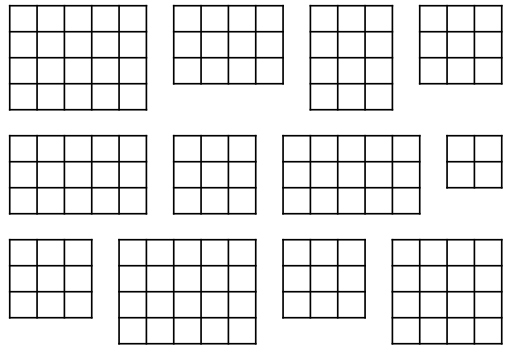
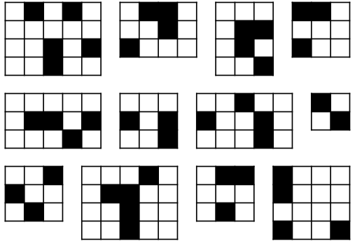
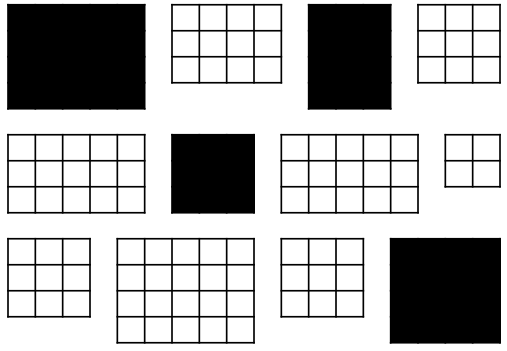
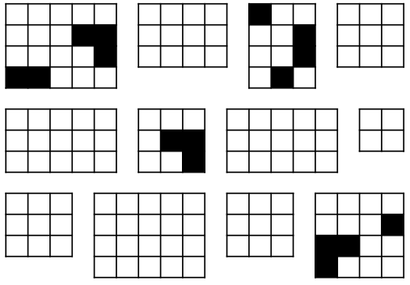
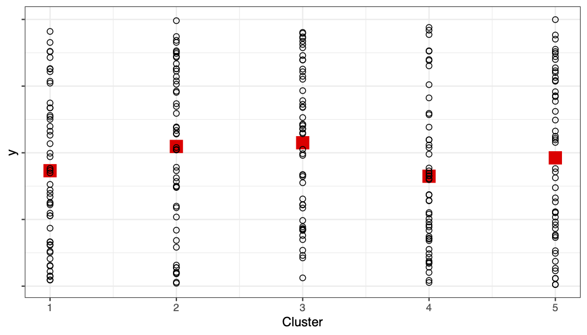
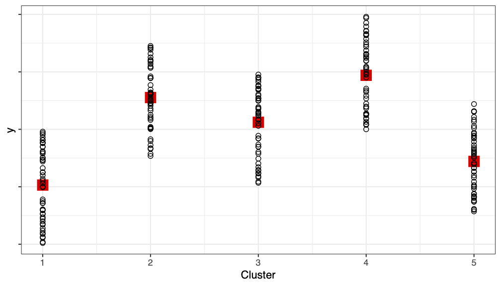

Cluster Sampling:
Intro and One-Stage
PUBHBIO 7225 Lecture 11
Outline
Topics
- One-stage Cluster Sampling
- Estimation
- Sampling weights
- CIs
- Quantifying the Impact of Clustering
- ICC
- DEFF
Activities
- 11.1 One-stage Cluster Sampling
Assignments
- Problem Set 3 due Thursday 10/2/25 11:59pm via Carmen
Cluster Sampling: A Classic Example
Want to estimate something about children in a school
Three possible ways to sample:
Take an SRS of children (from a list of all children enrolled at the school)
Stratify by classroom: take an SRS of children within each classroom
Take an SRS of classrooms and then sample either:
All children in that classroom (one-stage cluster sample)
An SRS of children in that classroom (two-stage cluster sample)
In general, cluster sampling increases variance relative to an SRS (of the same number of observation units)
If units within a cluster tend to be more similar than units between clusters → obtaining less information
Not all outcomes (\(y\)s) would be impacted the same – which would be more impacted?
- Classroom Example A: \(y\) = performance on a standardized test
- Classroom Example B: \(y\) = handedness (left vs right)
So Why Would We Cluster Sample?
We might have to: Constructing a sampling frame of observation units may be difficult, costly, or impossible.
Example: want to sample residents of a city, but only have a list of housing units
Example: studying birds in a region, but cannot list all the birds in a region (but perhaps could list geographic units which cover the region)
Cost considerations: Cluster sampling is usually cheaper than SRS
Population may be widely distributed geographically
Population may occur in natural clusters (households, schools, etc.)
For the same cost you often can sample more observation units in the cluster sample compared to an SRS, thus potentially overcoming the decrease in precision caused by clustering
Example: Target population = all incarcerated juveniles in the U.S.
Might be able to get a list of all incarcerated juveniles (frame), but taking an SRS would mean potentially going to a lot of locations across the U.S. (1,277 juvenile correctional facilities in 2025)
Cheaper to take an SRS of facilities and interview incarcerated juveniles at the sampled facilities
Vocabulary of Cluster Sampling
Primary sampling units (PSUs) = clusters = sampling units
Secondary sampling units (SSUs) = elements within clusters = observation units
Importantly – the observation unit (SSU) is not the sampling unit (PSU)
Can have more than two stages (e.g., children within classrooms within schools within counties…)
One-stage cluster sample = Sample all SSUs within selected PSUs (e.g., all kids in a classroom)
Two-stage cluster sample = Sample some SSUs within selected PSUs (e.g., some kids in a classroom)
Throughout this lecture we will assume that PSUs are selected via SRS and, for two-stage cluster sampling, SSUs are selected via SRS
- We will cover another method of selecting PSUs in a later lecture
Contrasting Cluster Sampling with Stratified Sampling
| Stratified Sampling | Cluster Sampling |
|---|---|
| Each element of the population is in exactly one stratum | Each element of the population is in exactly one cluster |
| Strata do not overlap, and they cover the whole population | Clusters do not overlap, and they cover the whole population |
| Population of \(H\) strata; stratum \(h\) has \(n_h\) elements, \(N=\sum_{h=1}^H n_h\) | Population of \(N\) clusters |
 |
|
| PSU = individual element | PSU = cluster |
| SSU = n/a | SSU = individual element |
Contrasting Cluster Sampling with Stratified Sampling
| Stratified Sampling | Cluster Sampling |
|---|---|
SRS of elements within each stratum:  |
SRS of clusters and: One-stage: take all SSUs in selected PSUs  Two-stage: SRS of SSUs in selected PSUs  . |
| Sample from every stratum | Only sample from some clusters |
Contrasting Cluster Sampling with Stratified Sampling
| Stratified Sampling | Cluster Sampling |
|---|---|
| Variance of estimate of \(\bar{y}_U\) depends on variability of \(y\) values within strata | Variance of estimate of \(\bar{y}_U\) depends primarily on variability between cluster means |
Variance minimized when
|
Variance minimized when
|
Remember:
|
Remember:
|
| Ignoring stratification often results in variance estimates that are too big | Ignoring clustering often results in variance estimates that are too small |
Notation for Cluster Sampling
- \(U\) = the finite population of PSUs
- \(N\) = number of PSUs (clusters) in the population (NOT number of observation units/SSUs)
- \(M_0\) = number of SSUs in the population
- \(M_i\) = number of SSUs in PSU \(i\), with \(\displaystyle \sum_{i=1}^N M_i = M_0\)
- \(\mathcal{S}\) = a particular sample of PSUs chosen from the population
- \(\mathcal{S}_i\) = the sample of SSUs selected in PSU \(i\)
- \(n\) = number of PSUs in the sample
- \(m_i\) = number of SSUs in the sample from PSU \(i\)
- For one-stage cluster sampling, \(m_i = M_i\) (take all SSUs in the PSU)
- \(y_{ij}\) = characteristic of interest for the \(j\)th unit in the \(i\)th PSU/cluster (not a random variable)
Activity 11.1
One-Stage Cluster Sampling (Part 1)
Example (from activity)
Notation:
PSU = dorm room
SSU = student
\(N\) = Number of PSUs (rooms) = 100
\(M_i\) = Number of SSUs (students) in PSU (room) \(i\) = 4
\(M_0\) = Total number of SSUs (students) = 400
\(n\) = Number of PSUs (rooms) in the sample = 5
\(m_i\) = Number of SSUs (students) in the sample from PSU (room) \(i\) = 4 = \(M_i\) (one-stage cluster sample)
\(y_{ij}\) = GPA for \(j\)th SSU (student) in PSU (room) \(i\)
You observed all students in each dorm room (all SSUs in each PSU)
- → You observed the true total for each sampled PSU, \(\mathbf{t_i}\)
You took an SRS of dorm rooms (PSUs)
No new formulae! Use the results for SRS with PSU totals as the observations \((t_i)\)
Example: A Picture
- Here’s my sample of \(n = 5\) rooms, with the \(m_i=4\) students in each room:
![A comparative data visualization consisting of two tables. The left table presents individual student data with three columns: id, room, and gpa. It includes 20 entries grouped by room numbers (17, 22, 31, 58, and 79), showing student IDs and their corresponding GPAs. The right table aggregates this data, displaying the total GPA per room with two columns: room and total of GPA. Red arrows visually link each student's GPA in the left table to the corresponding room's total GPA in the right table, illustrating the summation process to show an SRS of totals.](./figures/onestage_cluster_totals.png)
- If we collapse into one row per room, we are back to an SRS, sampling rooms and measuring the “total GPA” in each room!
One-Stage Cluster Sampling = SRS of TOTALS
We now have an SRS of PSUs, with measured variable = total \(\mathbf{y_{ij}}\) in each room
Can use standard SRS formulae – just substituting \(t\) (total) for \(y\) (outcome):
| Quantity | Truth | Estimate |
|---|---|---|
| Mean (of \(t\)): | \(\displaystyle \bar{t}_U = \frac{1}{N} \sum_{i=1}^{N} t_i\) | \(\displaystyle \bar{t}= \frac{1}{n} \sum_{i\in \mathcal{S}} t_i\) |
| Variance: | \(\displaystyle V(t_i)=S_t^2 = \frac{1}{N-1} \sum_{i = 1}^N (t_i - \bar{t}_U)^2\) | \(\displaystyle \widehat{V}(t_i)= s_t^2=\frac{1}{n-1} \sum_{i \in\mathcal{S}_i} (t_i - \bar{t})^2\) |
- And remembering that \(\bar{t}\) from our sample is a random variable, we have that:
| Expected Value | Variance | Variance Estimate |
|---|---|---|
| \(E(\bar{t})= \bar{t}_U\) | \(\displaystyle V(\bar{t})= \left(1-\frac{n}{N}\right)\frac{S_t^2}{n}\) | \(\displaystyle \widehat{V}(\bar{t})= \left(1-\frac{n}{N}\right)\frac{s_t^2}{n}\) |
Remember, \(N\) = number of PSUs in population, \(n\) = number of PSUs in the sample
NOT the number of SSUs!
Example (from activity)
- My SRS of dorm rooms was:
| Room # | Total GPA |
|---|---|
| 17 | 12.53 |
| 22 | 14.01 |
| 31 | 13.09 |
| 58 | 10.29 |
| 79 | 13 |
\(N=100\) (number of rooms in population)
\(n=5\) (number of rooms in sample)
\[\bar{t} = \frac{1}{n} \sum_{i\in \mathcal{S}} t_i = \frac{1}{5} (12.53 + 14.01 + 13.09 + 10.29 + 13) = \frac{62.92}{5} = 12.584\] \[\widehat{V}(t_i) = s_t^2 =\frac{1}{n-1} \sum_{i \in\mathcal{S}_i} (t_i - \bar{t})^2= \frac{1}{5-1}\left[(12.53-12.584)^2 + \cdots + (13-12.584)^2 \right]= 1.93198\]
\[\widehat{V}(\bar{t}) = \left(1-\frac{n}{N}\right)\frac{s_t^2}{n}= \left(1 - \frac{5}{100} \right) \frac{1.93198}{5} = 0.3670762\]
From TOTAL to MEAN
We don’t really want to know about total GPA, we want to know about mean GPA
Fortunately, we can go from one to the other fairly easily:
- Truth: \(\bar{y}_U=\frac{\text{total of $y$}}{\text{\# of SSUs}}= \frac{t_U}{M_0}\) → Estimate: \(\hat{\bar{y}}_{clus}= \frac{\hat{t}_{clus}}{M_0}\)
We have \(\bar{t}\), how can we get \(\hat{t}\)?
(# of PSUs) \(\times\) (average total in a PSU) = total across all PSUs
Truth: \(N \times \bar{t}_U = t\) → Estimate: \(N \times \bar{t}= \hat{t}_{clus}\)
Thus this gives us, for the mean of \(y\):
- Truth: \(\bar{y}_U= \frac{t_U}{M_0} = \frac{N \bar{t}_U}{M_0}\) → Estimate: \(\hat{\bar{y}}_{clus}= \frac{\hat{t}_{clus}}{M_0} = \frac{N \bar{t}}{M_0}\)
And of course we need variances… but conveniently \(N\) and \(M_0\) are constants!
- Truth: \(V(\hat{\bar{y}}_{clus}) = V\left(\frac{N \bar{t}}{M_0}\right) = \frac{N^2}{M_0^2}V(\bar{t}) = \frac{N^2}{M_0^2} \left(1-\frac{n}{N}\right)\frac{S_t^2}{n}\)
One-Stage Cluster Sampling – Estimator for the Mean
| Quantity | Truth | Estimate |
|---|---|---|
| Overall mean (of \(y\)): | \(\displaystyle \bar{y}_U = \frac{t}{M_0}\) | \(\displaystyle \hat{\bar{y}}_{clus}= \frac{\hat{t}_{clus}}{M_0}= \frac{N\bar{t}}{M_0}\) |
| Variance of \(\hat{\bar{y}}_{clus}\): | \(\displaystyle V(\hat{\bar{y}}_{clus}) = \frac{N^2}{M_0^2} \left(1-\frac{n}{N}\right)\frac{S_t^2}{n}\) | \(\displaystyle \widehat{V}(\hat{\bar{y}}_{clus}) = \frac{N^2}{M_0^2} \left(1-\frac{n}{N}\right)\frac{s_t^2}{n}\) |
Importantly, \(\hat{\bar{y}}_{clus}\) is unbiased: \(E(\hat{\bar{y}}_{clus}) =\)
Remember,
\(N\) = Number of PSUs in population
\(n\) = Number of PSUs in sample
\(M_0\) = Total number of SSUs in population
So to estimate the mean of \(y\) we…
calculate the average cluster total across the sampled PSUs \((\bar{t})\),
multiply this average by the number of PSUs \((N)\) to get a grand total \((\hat{t}_{clus})\)
and divide by the total number of SSUs \((M_0)\) to get an overall mean \((\hat{\bar{y}}_{clus})\)
Example (from activity)
In my SRS of dorm rooms, I had:
\(N=100\) (number of rooms in population)
\(n=5\) (number of rooms in sample)
\(M_0 = 400\) (number of students in population)
Estimated mean PSU (room) total: \(\bar{t}= 12.584\)
Estimated variance of PSU (room) totals: \(s_t^2 = 1.93198\)
My resulting estimates:
\(\hat{\bar{y}}_{clus}= \frac{N\bar{t}}{M_0} = \frac{100 \times 12.584}{400} = 3.146\)
\(\widehat{V}(\hat{\bar{y}}_{clus}) = \frac{N^2}{M_0^2} \left(1-\frac{n}{N}\right)\frac{s_t^2}{n}= \frac{100^2}{400^2} \left(1 - \frac{5}{100} \right) \frac{1.93198}{5} = 0.0229\)
\(\widehat{SE}(\hat{\bar{y}}_{clus}) = \sqrt{Var} = \sqrt{0.0229} = 0.151\)
Note: The true population mean GPA is \(\bar{y}_U = 2.836075\)
Sampling Weights in One-Stage Cluster Samples
SRS of \(n\) out of \(N\) PSU → each PSU has probability \(n/N\) of being selected
When clusters are sampled with equal probability (i.e., via an SRS), an SSU is included in the sample if the PSU is included in the sample
Thus the sample weight for sampled SSU \(j\) in PSU \(i\) is: \[w_{ij} = \frac{1}{P(\text{SSU $j$ of PSU $i$ included in sample})} = \frac{1}{\pi_{ij}} = \frac{N}{n}\]
Compare to an SRS:
If all PSUs had \(M_i=M\) elements, population size = \(NM\) and one-stage cluster sample has \(nM\) units
An SRS of \(nM\) units out of \(NM\) units: \(w_i = \frac{NM}{nM} = \frac{N}{n}\) = same as the one-stage cluster sample
So point estimates would be the same – but variance estimates would be different
- For the GPA cluster sample, \(w_{ij} = \frac{N}{n} = \frac{\text{\# of PSUs in \textbf{population}}}{\text{\# of PSUs in \textbf{sample}}} = \frac{100}{5} = 20\)
Confidence Intervals for One-Stage Cluster Samples
- An approximately \(\alpha\)-level confidence interval for the true mean \(\bar{y}_U\) is given by: \[\left(\hat{\bar{y}}_{clus}- t_{\alpha/2,n-1} \sqrt{\widehat{V}(\hat{\bar{y}}_{clus})}, \quad \bar{y}_{str}+ t_{\alpha/2,n-1} \sqrt{\widehat{V}(\hat{\bar{y}}_{clus})}\right)\] where \(t_{\alpha/2,n-1}\) is the \((1-\alpha/2)\)th percentile of a \(t\) distribution with DF = \(n-1\)
Often the number of PSUs sampled is not large, thus we most often use \(t\) (instead of \(Z\))
Again, you may see the DF “rule” written as DF = # of PSUs \(\mathbf{-}\) # of Strata
PSU = Primary Sampling Unit = cluster
If no stratification, then DF = \(n-1\) = # PSUs \(-1\)
Activity 11.1
One-Stage Cluster Sampling (Part 2)
Partitioning Variability Between and Within Clusters
When we take a cluster sample, we often lose precision (i.e., have increased variance) (relative to SRS)
E.g., in the activity: students living in same room have more “similar” GPAs
Ideally:
We want each cluster to be a mini version of the population – like if each cluster were an SRS of the population
If true, \(SSB \approx 0\)
(cluster means are similar, and all the variability is within a cluster)

However, the reality usually is:
Usually units are more similar within a cluster (e.g., similarity within household, similarity within dorm room)
If true, \(SSB > 0\)

Partitioning Variability Between and Within Clusters
We can return once again (like we did with stratification) to the idea of partitioning sums of squares to see the impact of clustering
This is like a one-way ANOVA, where the “grouping” variable is the cluster/PSU:
\[\begin{aligned} \text{Total Sum of Squares} &{}= \text{Between PSUs} + \text{Within PSU}\\ SST &{}= SSB + SSW \\ \sum_{i=1}^N \sum_{j=1}^{M_i} (y_{ij}- \bar{y}_U)^2 &{} = \underbrace{\sum_{i=1}^N \sum_{j=1}^{M_i} (\bar{y}_{Ui} - \bar{y}_U)^2}_{\text{\textbf{between} clusters: } SSB} + \underbrace{\sum_{i=1}^N \sum_{j=1}^{M_i} (y_{ij}- \bar{y}_{Ui})^2}_{\text{\textbf{within} clusters: } SSW} \end{aligned}\]
Between-cluster variability = how far are PSU means from overall mean (want small)
Within-cluster variability = how far are SSUs from their PSU average (want large) (relatively speaking)
Here we are looking at the population – so, all the \(y_{ij}\), not just the sampled ones
Partitioning Variability Between and Within Clusters
When all clusters are the same size, i.e., \(M_i=m_i=M\):
ANOVA Table
| Source | DF | Sum of Squares | Mean Square |
|---|---|---|---|
| Between PSUs | \(N-1\) | \(SSB=\sum_{i=1}^N \sum_{j=1}^{M} (\bar{y}_{Ui} - \bar{y}_U)^2\) | \(MSB = \frac{SSB}{N-1}\) |
| Within PSUs | \(NM-N\) | \(SSW=\sum_{i=1}^N \sum_{j=1}^{M} (y_{ij} - \bar{y}_{Ui})^2\) | \(MSW = \frac{SSW}{NM-N}\) |
| Total | \(NM-1\) | \(SST=\sum_{i=1}^N \sum_{j=1}^{M} (y_{ij} - \bar{y}_U)^2\) | \(S^2 = \frac{SST}{NM-1}\) |
Between-cluster variability: \(SSB\) = how far are PSU means \((\bar{y}_{Ui})\) from overall mean \((\bar{y}_U)\)
Within-cluster variability: \(SSW\) = how far are SSUs \((y_{ij})\) from their PSU average \((\bar{y}_{Ui})\)
Total variability: \(SST\) = how far are SSUs \((y_{ij})\) from overall mean \((\bar{y}_U)\)
We will use this ANOVA decomposition to obtain a DEFF (design effect)
Intracluster Correlation Coefficient (ICC)
Goal: quantify the impact of the clustering (how “similar” are SSUs in same PSU?)
Assume all clusters are the same size, i.e., \(M_i = m_i = M\)
ICC = Intracluster Correlation Coefficient: \(ICC = 1 - \frac{M}{M-1} \frac{SSW}{SST}\)
Properties of ICC:
Measures how similar SSUs in the same PSU are, relative to overall variability of SSUs
Since \(0 \le SSW/SST \le 1\), the ICC is bounded: \(-\frac{1}{M-1} \le ICC \le 1\)
If all elements in a cluster are the same, then \(SSW=0\) and ICC = 1
If ICC \(>\) 0, cluster sampling is less efficient than simple random sampling of elements
The ICC is equivalent to the Pearson correlation between all pairs of observation units from the same PSU in the population
Warning: ICC is only defined for one-stage cluster samples with equal cluster sizes
Example Calculation of ICC (from activity)
- Using the full population data, I ran a one-way ANOVA for the GPA data (\(M=\) 4 students per room, \(N=\) 100 rooms):
pop <- read.csv("./datasets/gpa.csv")
anova_model <- aov(gpa ~ factor(room), data=pop)
summary(anova_model) Df Sum Sq Mean Sq F value Pr(>F)
factor(room) 99 54.37 0.5492 3.553 <2e-16 ***
Residuals 300 46.38 0.1546
---
Signif. codes: 0 '***' 0.001 '**' 0.01 '*' 0.05 '.' 0.1 ' ' 1
From this we can calculate the true (theoretical) ICC:
\(ICC = 1 - \frac{M}{M-1} \frac{SSW}{SST} = 1 - \frac{4}{4-1} \frac{46.38}{46.38+54.37} = 0.386\)
\(ICC = 0.386 > 0\) so clustering will increase variance relative to SRS
Design Effect
Just like with stratification, we use the design effect (DEFF) to quantify the impact of clustering
Assuming all clusters are the same size (\(M_i=M\)), a one-stage cluster sample of \(n\) PSUs has \(nM\) SSUs
Compare the variance of the mean to an SRS of size \(nM\) (out of \(NM\) SSUs)
Design effect (DEFF) for the estimated overall mean from 1-stage cluster sample1: \[\begin{aligned} \text{deff}(\hat{\bar{y}}_{clus}) &{}= \frac{V_{clus}(\hat{\bar{y}}_{clus})}{V_{srs}(\bar{y})} \\ &=\frac{NM-1}{NM-M}[1+(M-1)ICC] \\ & \approx 1+(M-1)ICC \quad \text{[if $N$ is large so }NM-1 \approx NM-M] \end{aligned}\]
Thus, for each 1 SSU in an SRS, you need \([1+(M-1)ICC]\) SSUs from a one-stage cluster sample to get the same amount of information
Example Calculation of DEFF (from Activity)
For the students (SSUs) within rooms (PSUs) the true, theoretical ICC = \(0.386\)
\(M = 4\) students per room (SSUs per PSUs)
- DEFF = \(1+(M-1)ICC =\)
- Would need to sample more than twice as many students with clustered design as if we took an SRS (of the same number of SSUs)
Note #1: This is the true ICC and true (theoretical) DEFF. When calculating ICC and DEFF from a cluster sample, you’ll only get estimates of these quantities.
Note #2: In practice, clusters are rarely the same size – but we can still calculate the DEFF (using software)
Activity 11.1
One-Stage Cluster Sampling (Part 3)
PUBHBIO 7225